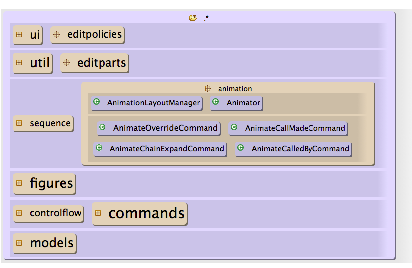
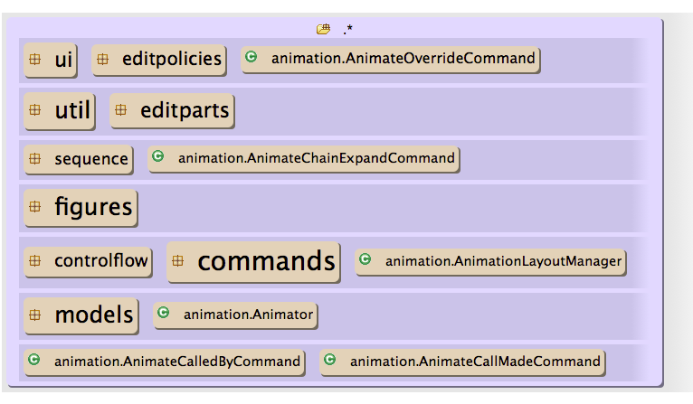

Layered Diagram
Layered Architectural Diagrams help provide an overview of your codebase. They are a great place to start when first looking at new or unfamiliar code. You can use them to navigate through a project to quickly find the classes or packages that are most relevant. Creating a Layered Diagram
Architexa lets you create Layered Diagrams easily. Diagrams can be created from multiple places such as the package explorer, can be viewed in an Eclipse view or an editor, and can be updated easily by exploring around or just linking them to editor selections.
Starting from the package explorer
- Right click on a project or package.
- Select 'Open in Diagram' -> 'Layered Diagram'
- The diagram will display the package or project and automatically open it to show its contents.
Creating a blank diagram in a new editor
- In the toolbar, click the small drop down arrow on the right side 'Open a new diagram editor'
 button.
button. - Select 'New Layered Diagram'
- Once you have a new editor drag in packages or classes from the package explorer to see how they interact.
Creating a blank diagram in a view
- Go to "Window > Show View" and select the option "Other..."
- Select "Layered Diagram" in the "Architexa" folder.
- You will now have a Layered diagram in a view which you can move, resize, or drag to a separate screen.
- Once you have a new view drag in packages or classes from the package explorer to see how they interact.
Using a linked view/editor to create a diagram
Follow the directions starting form step 2 here: Document while you work by creating a diagram in the background
More
For more help on opening diagrams see Opening Diagrams
How Layered Diagrams Work
Layered diagrams automatically organize your code into a hierarchy of layers based on the package structure.
- Items are organized in layers, with items towards the top of the diagram depend on those below. (When dependency cycles are found, Architexa uses sophisticated analyses to make a best guess).
- The size of packages indicates how many items they contain relative to other packages.
- The size of dependency arrows shows the strength of the dependency. If two packages have many more dependencies between them than other packages their connection will be much thicker.
- Items are nested based on directory/package nesting with each level of depth being represented by a different color.
- Mousing over a package or class highlights which items depend on or are depended on by others.
- Items highlighted in white depend on the item being moused over
- The moused over item depends on any items with a dark gray highlighting.
- Items with the same light gray color as the moused over item indicate that there is a cycle here.
Exploring a Layered Diagram
Layered diagrams are great to quickly understand the high level concepts of a codebase. It quickly provide you keen insights in your code architecture, package dependencies and obvious design patterns. Following are simple things you can do to make your diagram work wether your motive is to understand the code or document it for others.
Opening a package
To open a package and view its contents simply double click on it. For packages containing 20+ classes this may take a few moments.
Moving and Layering
- You can drag packages and classes to new places within the diagram.
- Dragging an item onto a blank spot in a layer will add it to that location in the layer, even if it is between two items
- Dragging it on top of a package will open the package and add it inside
- Dragging it between two layers will add it to a new layer in that location
- Items dragged to a different depth within the tree structure will show the full path in their name
- Clicking the parts of this name will add parent folders
- Moving items will not affect the organization of your actual code.
Adding a member
In the bottom right of any class or package that is not currently showing all its children, is a button labeled 'Members'
Clicking this button will allow you to add any un-shown children to the diagram individually.
Adding a dependent / dependee
- Click on a class or package
- If there are any dependencies to other items an up / down arrow will show above/below the selected item
- Clicking an arrow will allow you to show any items not already in the diagram that depend on (up) or are depended on (down)
Focusing on a specific package
If you have explored a diagram and now wish to focus your attention on a specific portion you can use the Focus command
- Right click on the package you would like to focus on
- Select 'Focus' from the context menu
- This will remove everything else in the diagram and open the package if it is not already open
Breaking a package
If there are items in a package that you wish to see in relation to the parent package you will need to use the 'Break' command.
- Right click on the package you would like to focus on
- Select 'Break' from the context menu
- This will remove the selected package but leave its children as children of the parent package.
- The images below show the animation package before and after the break<br \>
Animation package before break
Animation package after break
Deleting an element
To delete any package, class, or layer simply click on it to select it and hit the delete key on your keyboard. You can also delete by right clicking on the selected item and clicking on the delete option in the context menu.
Changing how dependency arrows are shown
If you would like to see all the dependency arrows concurrently,
- Right click and select 'Downward Arrows' -> 'Show Always'
If you would like to prevent dependency arrows from showing on mouseover,
- Right click and select 'Downward Arrows' -> 'Show Never'
If you would like to see cycles,
- Right click and select 'Upward Arrows' -> 'Show Always'
Relayering
If you have moved elements in a layered diagram and would like the Architexa algorithm to re-adjust a specific package simply right click on the parent package and select 'Re-Layer'. This would re-order the package to the original layout.
Documenting with a Layered Diagram
Layered diagrams can be tricky to document with since they are so interactive. We have added a couple of nifty features to make this aspect easier.
- If you are creating a diagram to show the dependencies of a specific class or package, share the diagram while the class or package is selected and all shown dependency arrows will be shown in the created diagram.
- You can also select multiple items by holding ctrl and clicking on them. This will allow you to share a diagram and show dependencies of more than one item.
- Selecting an open package will show all the dependencies going into and out of that package. This is a good way to give a better understanding of what the contents of a package are used for.
- You can choose to show a single connection always:
- Click on a dependency between two items.
- Click the small 'Pin' button to save the connection.
- The connection will now show as a dotted/dashed line and be visible no matter which items you mouse over.
Layered Diagram Tasks
---- Your question not answered? Send an email to support@architexa.com ----
{kind=link}
{kind=link}
{kind=link}
{kind=link}
{kind=link}
{kind=link}
{kind=link}
{kind=link}